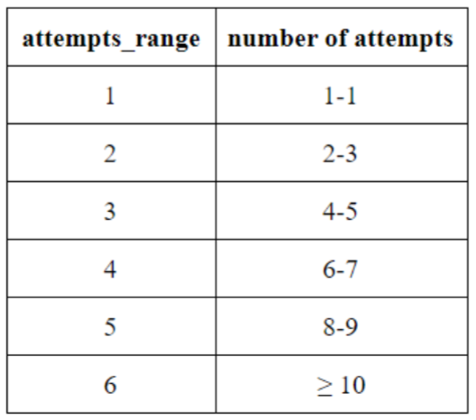
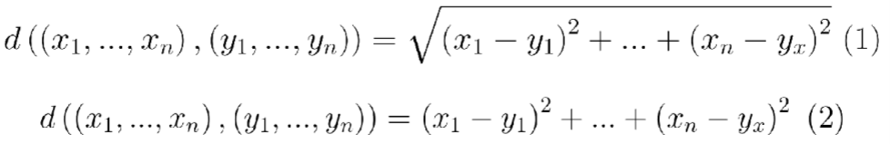
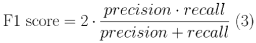

This project was submitted to and accepted by Tennessee Tech's Research and Cretive Inquiry Day. The project could not be presented at the physical event as the event had been cancelled due to the Coronavirus Outbreak.
Online judge platforms for programming problems need an effective recommendation engine to be able to recommend new engaging and challenging problems to the users. However, it is difficult for online judges to determine how challenging a new problem will be to each user. Recommending problems that are not challenging enough will make a user become unengaged. Recommending problems that are too challenging will make a user want to give up. A good determining factor for recommendations is the number of attempts a programmer at different expertise makes. This recommendation engine uses statistical models which contain information about the problems, the user, and the user’s submissions. The model predicts the number of attempts a user is likely to make when trying to solve problems of similar difficulty. To build these models, R is used to analyze the data and produce visualizations. The data has been collected and separated into train (70% of the submissions) and test (30%) sets by Analytics Vidhya. It contains 221,850 submissions which comprises 3,571 users and 6,544 problems. To evaluate the model, the F1 score is used. Based on the F1 scores of similar models that have been built for this issue, an F1 score of 0.4 has been deemed minimally acceptable for a model to address this issue. Producing an accurate model will help online judge platforms be able to engage and challenge their users and users be able to push the boundaries of their skills.

Recommendation engines suggest products, services, and content to users based on user data that has been collected and analyzed. The recommendations can be derived from data about a user, about similar users, and about the products or services. Recommendation engines have a wide range of applications, as they can create personalized experiences to engage the user. For example, a recommendation engine can choose programming problems for users to attempt on an online judging platform.
Online judge platforms for programming problems need an effective recommendation engine to be able to recommend new engaging and challenging problems for users to solve. However, it is difficult for online judges to determine how challenging a new problem will be to individual users. Recommending problems that are not challenging enough might make a user lose interest, but recommending problems that are too challenging will make a user want to give up. Creating an effective recommendation engine for online platforms to judge programming problems is a challenge presented by Analytics Vidhya’s DataHack.
Along with presenting this challenge, DataHack also provides data files, chooses a target dependent variable, and selects an evaluation metric. The given data files consist of data on the problems, users, and users’ submissions for various problems which were provided by an unnamed online judge. In total, the data files contain 221,850 submissions which comprises 3,571 users and 6,544 problems. The users’ submissions for various problems are already split into training (70%) and testing (30%) sets. The chosen target variable is attempts_range which designates the number of attempts a user makes when trying to solve a problem as shown in the table below. To evaluate the recommendation engine, the F1 score is selected.
Since their creation, recommendation engines have become useful for many applications. They are used to create personalized experiences and engage users more effectively. However, building them requires a lot of data – data about the users, data about similar users, and data about the product or service – and data science knowledge to analyze and model that data. This paper outlines the process of creating a recommendation engine for online judging platforms for programming problems.
The provided data consisted of data about the users, problems, and users’ submissions. Data about the users consisted of user id, submission count, total number of accepted user submissions, user contribution to the judge, user’s country, follower count, time when the user was last seen online, time when the user registered, maximum rating, rating, and rank where the user can be ‘beginner’, ‘intermediate’, ‘advanced’, or ‘expert’. Data about the problems consisted of problem id, the difficulty level of the problem between ‘A’ and ‘N’, points, and tags to describe the problem. Data about the users’ submissions consists of user id, problem id, and attempts range. To determine good predictor variables, exploratory data analysis was used to explore the data.
The first step was plotting the counts of variables with attempts_range filled in. These plots helped determine which variables could possibly be good predictors. Level type and rank were determined to be good predictors.
Figure 1 shows that there were many more submissions for the easier problems. Interestingly, it showed that a lot of the submissions fall into the 1 - 2 attempts ranges in each level type category. Figure 2 showed that a lot of submissions fall into the 1 - 2 attempts ranges, even more so in the 1 attempts_range category, in each rank category. Figure 2 showed that most of the submissions came from beginner and intermediate ranks. Individually, level type and rank seemed to hold some predictive power.
The next step was to check for duplicated rows. A user may have worked multiple problems and would therefore have multiple entries with the same user id but different problem information. Figure 3 shows that all the rows are unique.
Points was another variable that shows some predictive power, but there were several NAs in this category. Searching for relationships between points and other variables could be used to help address the issue of replacing the NAs. The relationship between level type and points was explored with a boxplot. The number of points assigned to a problem with a given level_type seems to generally fall into its own range of points. However, there are a substantial number of outliers to demonstrate that the points given and the level_type given are not necessarily correlated.
Relationships concerning the tags variable were explored. The number of tags nor the tags themselves do not seem to have predictive power. A relationship between points and tags was explored to determine if there was a potential correlation between the two variables, but it was determined that tags cannot be used to fill in NAs for points.
Random Forest classifies objects by taking the majority vote of the class predictions from multiple decision trees. It determines which variables hold the most predictive power and generates an estimated out-of-bag (OOB) error rate. The random forest that produces the lowest estimated OOB error rate has the best combination of predictor variables and is used to execute the prediction phase. Random Forest was used for this problem because it verified the already identified predictor variables from the exploratory data analysis and identified other good predictor variables.
The 10-Fold Cross Validation confirms that the Random Forest model is as accurate as the model suggests. To ensure overfitting of the model has not occured, the dataset is broken into parts (folds), and the model is applied with one part being the test set and the others being the training sets. It is recommended to start with ten parts (folds) and to repeat the process ten times.
Due to hardware limitations, the 10-Fold Cross Validation could not be executed with the full data. Attempting the 10-Fold Cross Validation with the dataset size of 1,000 also could not execute. The 5-Fold Cross Validation was then attempted and failed. The 3-Fold Cross Validation was also attempted and also failed.
K-Nearest Neighbors (or K-NN for short) performs classification on unlabeled objects based on the majority vote of k similar labeled objects. The k is determined by the lowest misclassification rate when K-NN is run with various values as k. There are various metrics to determine the similarity of the objects. K-NN is usually accomplished with Euclidean Distance (1) as its similarity metric. However, K-NN was implemented using Euclidean Squared Distance (2) as its similarity metric for this project as an attempt to resolve the “too many ties” error.
Since K-NN requires numeric variables, level type (difficulty represented by letters ‘A’ to ‘N’ with A being the easiest) and other string variables has to be converted to numeric. After making variables numeric, simple scatter plots with a variable on each axis were created to determine which variables might be good predictor variables. Numeric level type and points.imp.mean (NAs were replaced by the average points) were selected as the predictor variables for this model.
K-Nearest Neighbors could not finish with the full dataset due to hardware limitations. The process of selecting the best had to be eliminated at this point, and k was set to 1. To see if K-NN could be considered a good modelling as a possibility to pursue in the future with better hardware, the dataset was trimmed to a random sampling. The first trimmed random sampling size was 50% of the original dataset size; it still could not complete the K-NN algorithm with k=1. The second attempt was with a sample size of 10% and still the same result. A 5% sample size was tried next. After 2 hours of waiting, the K-NN still did not finish. To see if K-NN would run at all, using a 1% sample size was attempted, and it finished in about five minutes. While not ideal, the 1% sample size can give insight as to how the model can predict the correct labels.
Linear Regression was briefly considered as a simple modelling method to implement, but then it was soon realized that it was not applicable to the problem. Linear Regression is not well suited for classification, but it can still be used to accomplish classification. It can, at best, perform binary classification which is not the kind of classification this problem requires.
Multinomial Logistic Regression was considered but never implemented due to time constraints. It is used for predicting a multiclass dependent variable with one or more predictors. It is applicable to this problem because the target dependent variable attempts_range has multiple categories.
R and RStudio were used to program this recommendation engine. Several R libraries were needed to conduct the exploratory data analysis and to implement the models.
The package randomForest is required to execute Random Forest. To train the data, the function randomForest is used. The results of randomForest gives an estimated out-of-bag error rate and information about the importance of the independent variables used to train with. The importance of the independent variables can be viewed as a plot with the function varImpPlot. The function predict performs the prediction of the test data.
Cross Validation requires the caret, doSNOW, rpart, and rpart.plot packages. The function train from the caret package fits predictive models with different variables as predictors. The function registerDoSnow allows for parallel execution with a cluster object. The packages rpart and rpart.plot are needed to do recursive partitioning for classification.
K-Nearest Neighbors can be executed with a few different packages. The package neighbr was selected to implement K-NN because its knn function allowed for the selection of the similarity metric. The function knn handles the training and testing of the data and produces a list of function call information and list of the predicted values as its results.
The package ggplot2 served to create the visualizations. During the data exploration phase, the functions stat_count and geom_histogram were used to visualize how different variables may correlate with the target variable attempts_range. The functions geom_point and geom_line were used to determine factors for modelling K-NN.
When exploring the data, the package stringr was used to analyze the string data. The variable tags needed the function str_detect to identify certain tags from a list of tags.
To determine the effectiveness of the K-NN model, packages caret and e1071 were needed. They were used to create a confusion matrix of the predicted attempts_range and the actual attempts_range with the function confusionMatrix. The results of the function confusionMatrix produced several statistics including an F1 score.
Selected by DataHack, the F1 score has been used to determine a model’s effectiveness. Based on the F1 scores of similar models that have been built for this challenge, an F1 score of 0.4 has been deemed minimally acceptable for the models explored in this project.
Exploratory Data Analysis revealed that level type and rank were good predictor variables to start with. Points also proved to have some predictive power, but the NAs needed to be addressed first. There was not a strong enough relationship between any of the other variables to determine how to replace the NAs. The NAs had to be replaced with the average points value and put into a new column called points.imp.mean. During this phase, it was discovered that there are no duplicate rows of data and tags did not have any predictive power
Random Forest verified that level type, rank, and points (the modified points.imp.mean) were strong predictors. It also revealed submission count was another strong predictor variable. With these variables, the random forest produced an estimated out-of-bag error rate of 46.5%. This model produced an F1 score of 0.403 which met the minimal acceptance requirement.
Due to hardware limitations, Cross Validation and K-Nearest Neighbors were not able to produce final results. 10-Fold, 5-Fold, and 3-Fold Cross Validations would not execute with either the full dataset or a sample size of 1,000. K-Nearest Neighbors would not execute with the full dataset, a 50% sample set, a 10% sample set, or a 5% sample set, but it did finish with a 1% sample set in about five minutes.
K-Nearest Neighbors was able to be executed five times, each with a new random 1% sampling of the original dataset. Doing this five times showed the distribution of the samplings. After executing K-NN five times, the results of the predicted labels and the true labels of the testing set were made into a confusion matrix, and an F1 score was calculated for each category in attempts_range. The higher F1 scores were assigned to the categories that had more data. Categories 5 and 6 had no F1 scores because there was not enough data for a proper calculation to be made. Figure 6 shows that K-Nearest Neighbors could be a good modelling technique if given better hardware to complete K-NN with the full dataset.
Recommendation engines create personalized experiences for users by suggesting products, services, or content based on data about the user, similar users, and/or products/services/content. They provide a multitude of uses, including recommending programming problems on an online judging platform which is a challenge proposed by DataHack. DataHack also provided the data files that covered the data about the users, users’ submissions, and problems, selected the target variable attempts_range (more in table below), and picked the F1 score as the evaluation metric.
Based on the F1 scores of similar models that have been built for this challenge, an F1 score of 0.4 has been deemed minimally acceptable for the models explored in this project. Random Forest, 10-Fold Cross Validation, and K-Nearest Neighbors were explored in this project. Linear Regression and Multinomial Logistic Regression were considered but never implemented due to inapplicable use and lack of time, respectively
Through Exploratory Data Analysis, level type, rank, and points are good starting predictor variables. Random Forest helps with determining good predictor variables by taking the majority vote of class predictions from multiple decision trees. Random Forest verified that level type, rank, and points (after modification to replace NAs with the average points) have predictive power and exposed submission count to be another good predictor variable. Using those predictor variables for the prediction of the testing set produced an estimated out-of-box error rate of 46.5% and an F1 score of 0.403. The Random Forest model with level type, rank, modified points, and submission count met the minimal acceptance requirement. Cross Validation then was conducted next to confirm that the model is as accurate as it suggests. Cross Validation breaks the dataset into folds (parts) and applies the model with one fold being the testing set and the others being the training set. It is recommended to start with 10 folds and repeat 10 times. However, Cross Validation with 10 folds, 5 folds, and 3 folds could not be executed with either the full dataset or a sample size of 1,000. K-Nearest Neighbors (K-NN) was another explored model that also could not be fully executed. K-NN classifies unlabeled objects based on the majority vote of k similar labeled objects. With numeric level type and modified points as predictor variables, K-NN with k being 1 and similarity determined by Euclidean Squared Distance could not be executed with the full dataset, a 50% random sampling, a 10% random sampling, or a 5% random sampling. K-NN could be conducted with a 1% random sampling of the original dataset which showed potential as a good modelling technique if given better hardware.
The failed attempts with Cross Validation and K-Nearest Neighbors were due to hardware limitations. The limitations of R could also be a factor in those failed attempts. R was created to work with small datasets (roughly a few thousand members), and the dataset provided by DataHack contained over 200,000 members.